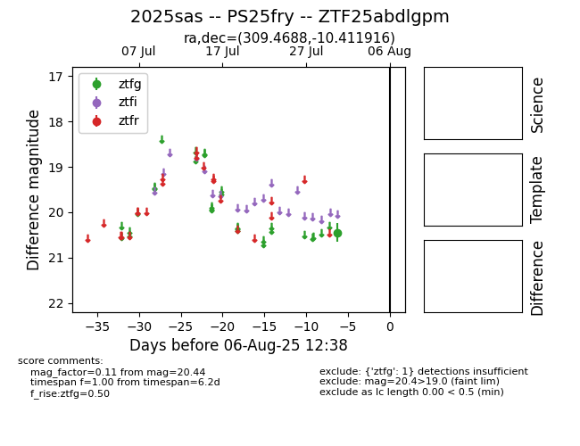

Target 2025sas at 2025-08-06 17:27, see:
FINK: fink-portal.org/2025sas
Lasair: lasair-ztf.lsst.ac.uk/objects/2025sas
ALeRCE: alerce.online/object/2025sas
TNS: wis-tns.org/object/2025sas
YSE: ziggy.ucolick.org/yse/transient_detail/2025sas
alt names
ZTF25abdlgpm (ztf,fink)
2025sas (tns,yse)
PS25fry (panstarrs)
coordinates:
equatorial (ra, dec) = (309.4688,-10.41192)
galactic (l, b) = (35.5385,-28.32504)
photometry
last ztfg=20.44
1 ztfg detections
